История математики
Математика – точная дисциплина, которую называют царицей всех наук. Принято считать, что первые числа появились тысячи лет тому назад, вместе с речью. По этому поводу Ф. Энгельс писал, что самый древний источник математических знаний – это пальцы рук. Среди самых древних математических документов, дошедших до наших дней, считают записи вавилонян. По оценкам ученых, они сделаны более восьми тысяч лет назад. Математические записи встречаются и у других народов. Так как появилась математика, и кто ее придумал?
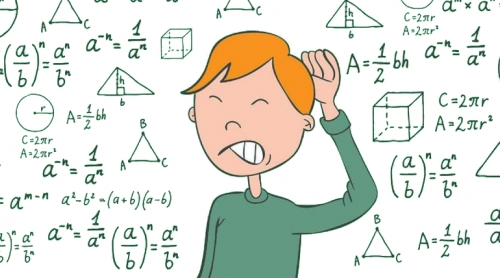История
Никто точно не может сказать, как появилась математика. Сведения о ней содержатся в разных письменах у различных народов. Самые древние сведения, дошедшие до наших дней – клинописные таблички. Найденные артефакты эпохи Вавилона показывают, что даже шесть тысяч лет тому назад люди вели подсчеты домашних расходов, торговых сделок, решали математические задачки. Позже вавилоняне начали решать сложные алгебраические задачки, кубические и квадратные вычисления. А как появилась математика с дробями, когда это было? Такие сложные действия люди научились вычислять не сразу, однако уже в Древнем Египте умели проводить вычисления с дробями, у которых в числительном была единица. Десятичные дроби появились благодаря самаркандскому математику Д. ибо-Самосуд аль-Каши пятьсот лет назад. Спустя почти два столетия фламандский математик Стивен ввел их в Европе. Даже сегодня в математике совершаются различные открытия. Это связано с тем, что математика – наука, которая не стоит на месте, а постоянно движется вперед.
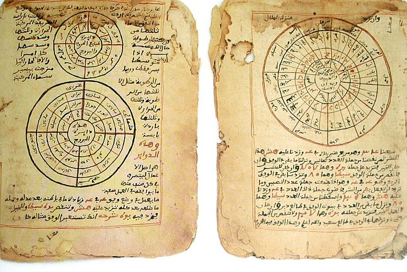Становление науки
С тех пор, как появилась математика, люди стали более разумными. В давние времена счет был нужен для занятия всеми видами деятельности. Математику применяли в скотоводстве, торговле. Чтобы было удобнее пользоваться счетом, применяли части тела: пальцы рук, ног. Об этом свидетельствуют древние наскальные рисунки, которые изображают числа в виде определенного количества изображенных пальцев рук.
Первые открытия
Многие ученые пытаются разгадать загадку истории – как появилась математика. Однако точную дату возникновения науки никто не может назвать. Среди всех существующих открытий, самое значимое – изобретение самого числа и четырех основных действий: сложения, вычитания, деления и умножения. Среди геометрических понятий, первыми достижениями стали прямая и окружность. Далее огромный вклад в развитие науки внесли вавилоняне и египтяне примерно три тысячи лет назад. Исходя из этого, отвечая на вопрос, где появилась математика, можно сказать, что она зародилась в Вавилоне, а затем в Египте. Сохранившиеся таблички показывают, какие вычисления проводились в те времена.
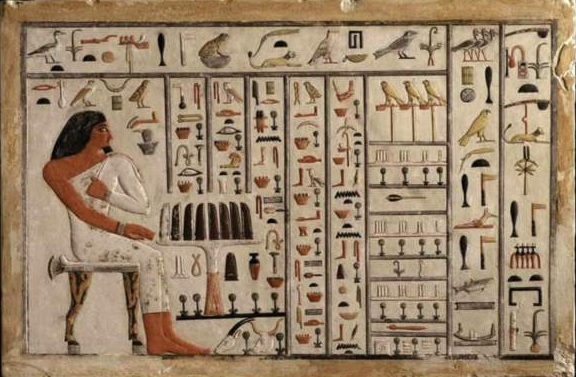Наука в Вавилоне и Египте
В Вавилоне, откуда появилась математика, постоянно разрабатывались исследования, в которых применялись единицы и десятки. Именно вавилонские ученые придумали градусы, разрабатывались системы исчисления. Однако в вавилонской системе не было нуля, из-за чего обозначение некоторых чисел было сложным. В Египте числа обозначались в виде иероглифов. До семнадцатого века математика считалась наукой, которая изучает числа, геометрические фигуры, величины. Ее применяли в торговле, астрономии, архитектуре, при проведении земляных работ. И только с восемнадцатого столетия она начала свое бурное развитие.
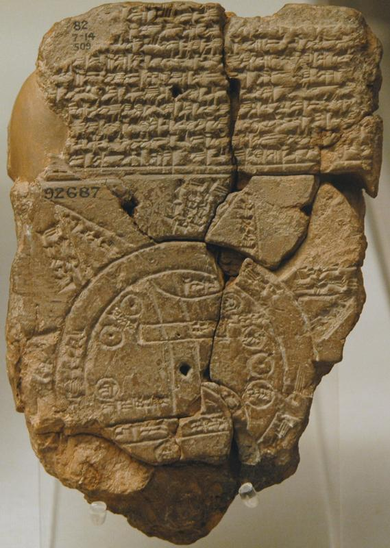История о математике
Ученые все еще задаются вопросом, в какой стране появилась математика. Есть свидетельства, показывающие, что простые измерения проводились у инков. Этот народ разработал особую узелковую систему счета, которая позволяла вести подсчеты доходов и расходов. Из Древнего Египта до нас дошли тексты решения задач. Египтяне знали дроби, проводили расчеты площадей, объемов. Одному из документов более четырех тысяч лет – это папирус Ринда. Из библиотеки Ашшурбанипала до нас дошли глиняные таблички. Междуречье считалось высокоразвитым. Здесь даже математика была более высокого уровня, чем в других странах. Не малый вклад в развитие науки сделали древние греки. Около трехсотого года до нашей эры, Евклидий создал манускрипт, посвященный геометрии. Позже вклад в науку внесли другие ученые. В Китае, примерно в двухсотом году до нашей эры, изучали математику по «Арифметике в девяти главах». Это писание было составлено на основе ранних записей.
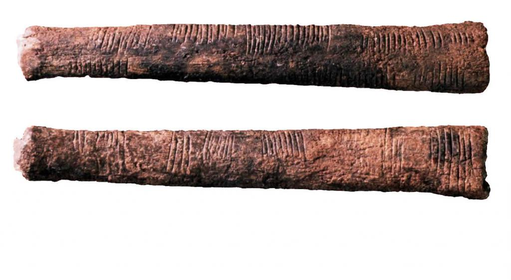История арифметики
С глубокой древности работа с числами подразделялась на две различные области: одна касалась непосредственно свойств чисел, другая была связана с техникой счета. Под «арифметикой» во многих странах обычно имеется ввиду именно эта последняя область, которая несомненно является старейшей отраслью математики.
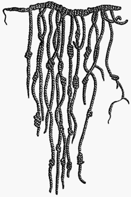Рисунок: Древнее счётное устройство инков.
По-видимому, наибольшую трудность у древних вычислителей вызывала работа с дробями. Об этом можно судить по папирусу Ахмеса (называемому также папирусом Ринда), древнеегипетскому сочинению по математике, датируемому примерно 1650 до н.э. Все дроби, упоминаемые в папирусе, за исключением 2/3, имеют числители, равные 1. Трудность обращения с дробями заметна и при изучении древневавилонских клинописных табличек. И древние египтяне, и вавилоняне, по-видимому, производили вычисления с помощью некоторой разновидности абака. Наука о числах получила у древних греков существенное развитие начиная с Пифагора, около 530 до н.э. Что же касается непосредственно техники вычисления, то в этой области греками было сделано гораздо меньше.
Привычное сейчас повсеместное использование десятичной системы записи чисел с помощью арабских цифр является одной из заслуг величайшего мусульманского математика — Мухаммада Аль-Хауаризмий (ок.780 — ок.850), известного в истории математики, а также западной науке как Аль-Хорезми, и других ученых багдадской школы. До распространения десятичной позиционной системы счисления, заимствованной арабскими математиками у индусов, арабы для записи чисел использовали буквенную нумерацию — «абджадия», а европейцы — громоздкие римские цифры.
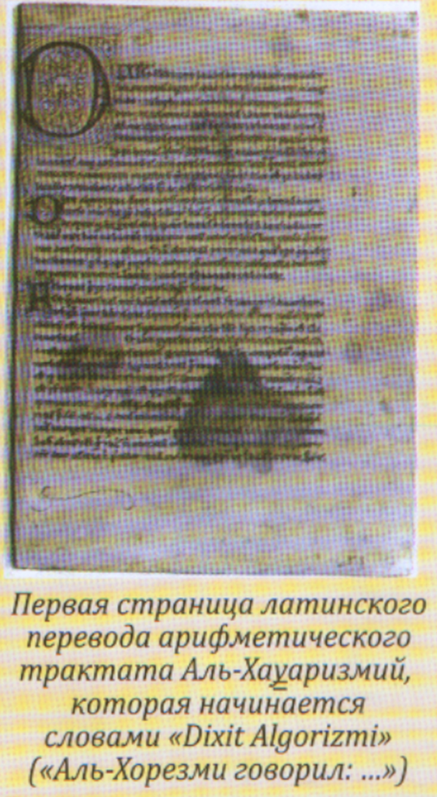В 7 в. арабы познакомились с индийской десятичной позиционной системой записи чисел и оценили ее удобство и преимущество для вычислений. Однако широкую известность и распространение она получила благодаря знаменитому арифметическому трактату Аль-Хауаризмий «Китаб хисаб аль-‘адад аль-hинди» — «Книга об индийском счёте», которая сыграла важнейшую роль в истории математики. В этом сочинении впервые дано систематическое изложение арифметики, основанной на десятичной позиционной системе счисления с использованием нуля, а также подробно описаны арифметические операции с числами, записанными в этой системе.
Хотя арабский текст этой книги утерян, ее содержание известно по латинской обработке 12-го в., единственная рукопись которой хранится в Кембридже. Она не имеет заглавия и начинается словами «Dixit Algorizmi» («Аль-Хорезми говорил:…»).
Этот перевод также известен под названием «Algoritmi de numero Indorum». Многочисленные переводы арифметического трактата Аль-Хауаризмий образовали огромную литературу по «алгоризмам», ставшую одной из основ дальнейшего прогресса науки в Европе. Со временем латинизированное имя Аль-Хауаризмий (Algorizmi или Algorizmus) стало нарицательным и превратилось в «алгоритм». Вначале так называли арифметику, основанную на десятичной позиционной системе счисления. Впоследствии этот термин приобрел более широкий смысл как правило выполнения операций в определенном порядке.
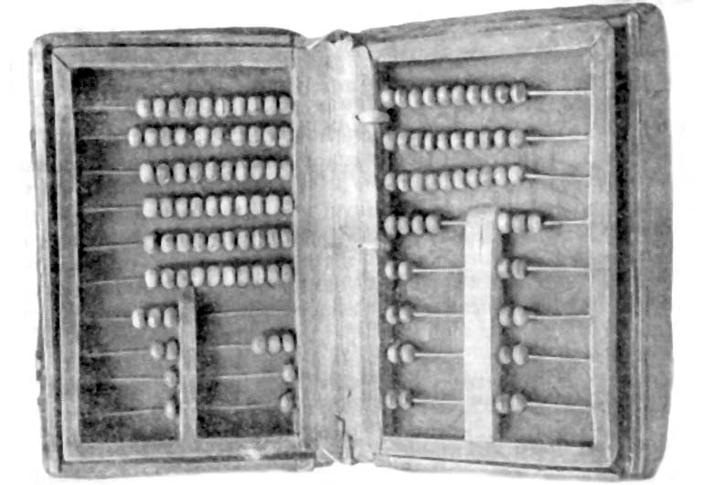Таким образом, важнейшая заслуга Аль-Хауаризмий состояла в том, что он понял преимущества десятичной позиционной системы счисления и положил начало ее широкому распространению. Ее внедрение обеспечило быстрый прогресс вычислительной математики. В этой области ученым Ближнего и Среднего Востока, работавшим в 9-15 вв., принадлежит много важных достижений. Они разработали приемы извлечения корней любой степени, применили правило, носящее теперь название бинома Ньютона, к любому натуральному показателю, открыли десятичные дроби и т. д. Немецкий ученый К. Фогель назвал Аль-Хауаризмий «учителем Запада не только в алгебре, но и во внедрении им новых индийских цифр и методов вычисления».
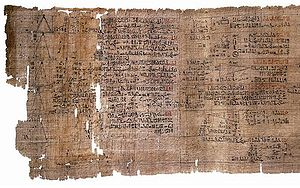История геометрии
Геометрия - одна из древнейших отраслей математики. Геометрические тела были известны задолго до того, как были выведены математические принципы. Геометрия - это математическое исследование точек, линий, плоскостей, замкнутых плоских фигур и твердых тел. Используя это, можно описать или построить каждый видимый и невидимый предмет.
Геометрия происходит от слова "geo" - земля, "metria" - мера. Геометрия возникла как область знаний, занимающаяся пространственными отношениями. Геометрия одна из двух областей математики, вторая - арифметика, или алгебра.
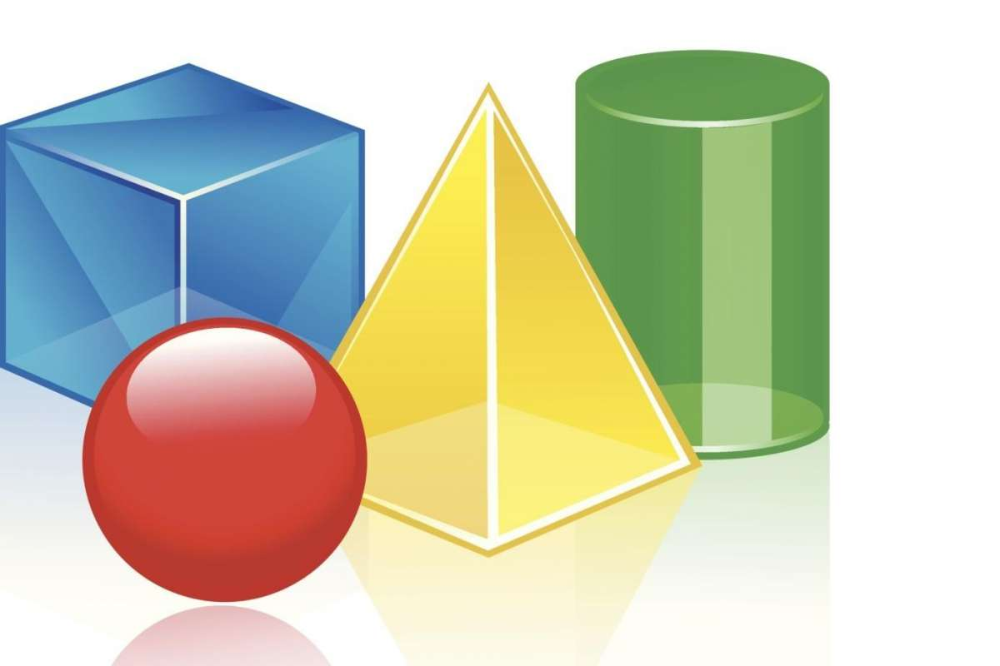Геометрия с практической точки зрения - это потребность измерять формы. Считается, что геометрия впервые стала важной, когда Египетский фараон хотел обложить налогом фермеров, которые выращивали урожай вдоль реки Нил. Чтобы вычислить правильную сумму налога, люди фараона должны были измерить количество обрабатываемой земли.
Около 2900 лет до нашей эры была построена первая египетская пирамида. Знание геометрии было необходимо для построения пирамид, которые состояли из квадратного основания и треугольных граней. Самая ранняя запись формулы для вычисления площади треугольника датируется 2000 годом до нашей эры. Египтяне и вавилоняне разработали практическую геометрию для решения повседневных проблем, но нет никаких доказательств того, что они логически выводили геометрические факты из основных принципов.
Именно греки 600 – 400 лет до нашей эры разработали принципы современной геометрии. Фалес Милетский изучил подобные треугольники и написал доказательство того, что соответствующие стороны подобных треугольников пропорциональны.
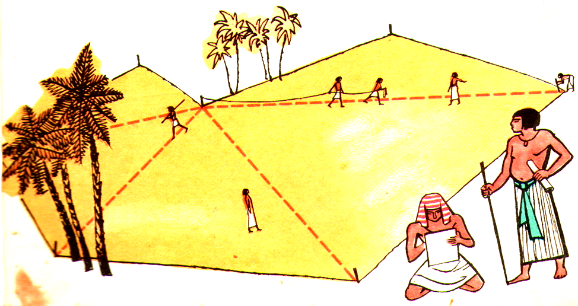Великие математики
1. Евклид
Известен: принцип Архимеда; гидростатика
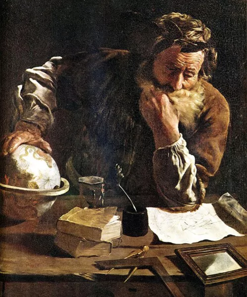Архимед родился примерно в 287 г. до н.э. в Сиракузах, Сицилия. Он хорошо разбирался в математике, физике и астрономии того времени. Он был эрудитом. Однако большинство его литературных произведений не сохранилось.
Архимед был одним из пионеров геометрии, который вывел формулы для площади круга, объема и площади поверхности сферы. Его метод определения значения числа пи оставался бесспорным и единственным известным способом вычисления окружности круга на протяжении десятилетий.
Филдса, самая высокая честь в области математики, несет портрет (справа облицовочный) Архимед вместе с цитатой приписываемой ему.
2. Архимед
Известен: евклидовой геометрии; Евклидов алгоритм
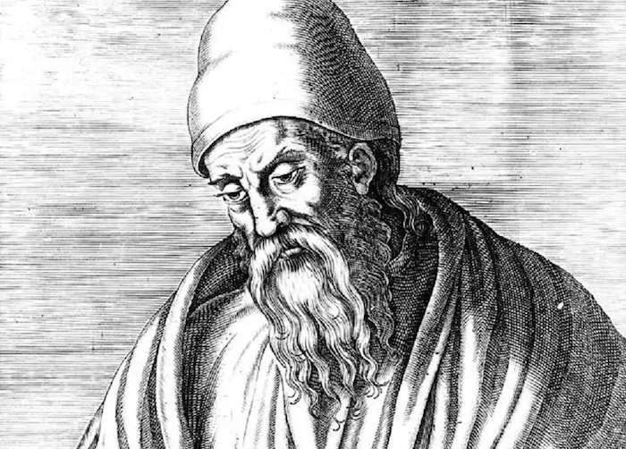Евклид Александрийский был греческим математиком, которого многие считают основателем геометрии. Euclid's Elements, сборник из 13 книг, считается одной из самых старых и влиятельных книг по математике.
Хотя геометрия (которая теперь известна как евклидова геометрия) является фокусом в Элементах Евклида, она также имеет всеобъемлющее введение в теорию элементарных чисел. Его работы по оптике также получили широкое признание.
Системный подход Евклида в его работе - начиная с аксиом и затем логически получая сложные результаты, оказал влияние на некоторые из величайших умов последующих поколений. Principia Mathematica Ньютона - прекрасный пример этого.
3. Леонард Эйлер
Известен: догадки Эйлера; Уравнения Эйлера; Числа Эйлера
В знак уважения к вкладу Леонарда Эйлера в математику Пьер-Симон Лаплас, известный французский астроном и математик, написал: «Читайте Эйлера, читайте его снова и снова, он - мастер всех нас».
Сегодня математики высоко ценят Эйлера и считают его самым важным математиком 18-го века.
Эйлер внес значительный вклад почти во все основные области математики, включая алгебру, тригонометрию и геометрию. В физике его работы по гидродинамике и рядам Фурье не имеют себе равных.
4. Иссак Ньютон
Известен: законы движения Ньютона; Исчисление; Ньютоновская механика
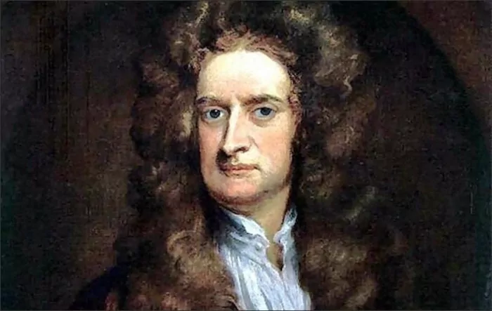Сэр Иссак Ньютон является одним из основателей классической механики, а также исчисления бесконечно малых. Его взгляды на гравитацию оставались общепринятыми до теории относительности Эйнштейна.
Самый замечательный вклад Ньютона в математику — исчисление (тогда называемое бесконечно малыми), которое он разработал независимо от своего современника Готфрида Вильгельма Лейбница.
Это был Ньютон, который первым объяснил причину приливных возмущений на Земле и помог проверить закономерности движения планет Кеплера. Его работы по оптике дали нам первый в мире преломляющий телескоп.
5. Карл Фридрих Гаусс
Награды: премия Лаланде (1809), медаль Копли (1838)
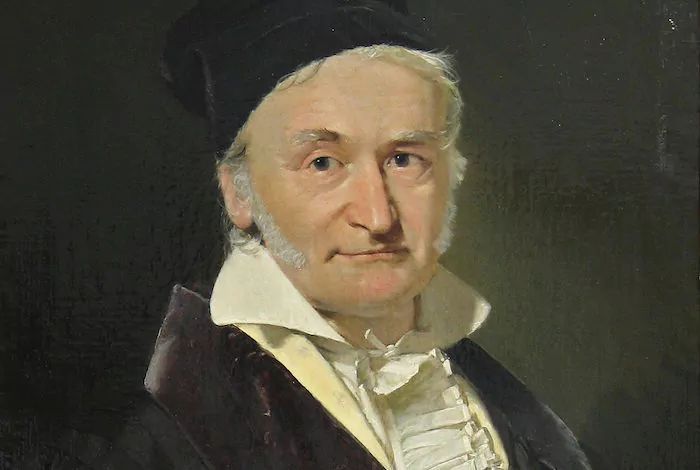Карл Фридрих Гаусс был, пожалуй, самым влиятельным математиком со времен древних греков. Его вклад в различные области математики и физики практически не имеет аналогов. Гаусс начал проявлять математические способности в возрасте семи лет, когда он мог решать арифметические прогрессии намного быстрее, чем кто-либо в своем классе.
Некоторые из его популярных работ включают Закон Гаусса и Теорема Egregium, в которых сделан вывод, что Земля не может быть отображена на карте без искажений. Он был первым, кто предположил возможность неевклидовой геометрии, хотя его работы никогда не публиковались.
6. Пифагор
Известен: теорема Пифагора; Теория Пропорций
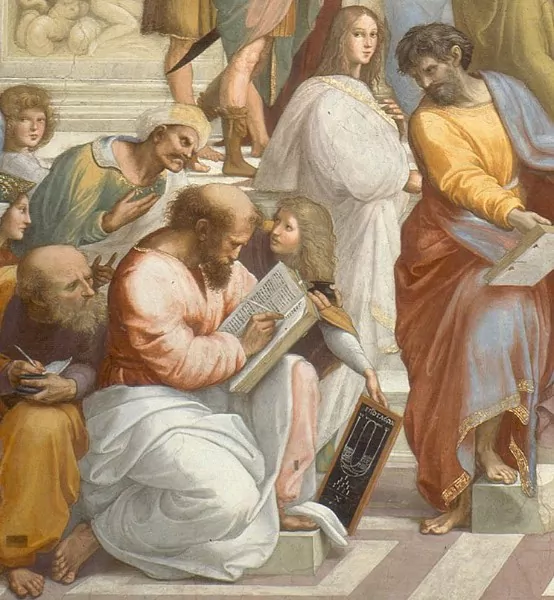Пифагор Самосский родился около 570 г. до н.э. Как и большинство древних греков, о его молодости известно немногое. Как философ, его работы оказали влияние на Платона и Аристотеля, а также на Иоганна Кеплера и Исаака Ньютона.
Хотя его подлинность остается дискуссионной, многие математические выводы приписываются Пифагор. Возможно, самая известная из них - теорема Пифагора (названная в его честь). Многие историки утверждают, что эта теорема была известна вавилонянам задолго до Пифагора.
Пифагор, возможно, также был ответственен за открытие Теории Пропорций.
7. Семья Бернулли

В мире математики семья Бернулли занимает особое место. Родом из Антверпена (Бельгия), Джейкоб и его брат Иоганн Бернулли были первыми математиками в этой семье.
И Джейкоб, и Иоганн работали вместе над бесконечно малым исчислением, и им приписывают теоремы и обоснования, такие как числа Бернулли и кривая Брахистохрона.
Даниэль Бернулли, сын Джейкоба, был одним из самых выдающихся членов семьи Бернулли. Его наиболее известная работа, принцип Бернулли, математически объясняет работу карбюратора и крыла самолета. Он также внес существенный вклад в области вероятности и статистики.
8. Фибоначчи
Известен по: числам Фибоначчи
Фибоначчи, также известный как Леонардо из Пизы, был одним из самых опытных математиков высокого средневековья.
Возможно, его самым важным вкладом в этот предмет является книга Либера Абачи, в которой он популяризировал индо-арабскую систему счисления (0,1,2,3,4...) и последовательность Фибоначчи в Европе.
Последовательность Фибоначчи используется в компьютерных алгоритмах и базах данных.
9. Дэвид Гильберт
Известен: теории доказательств; Проблемы Гильберта
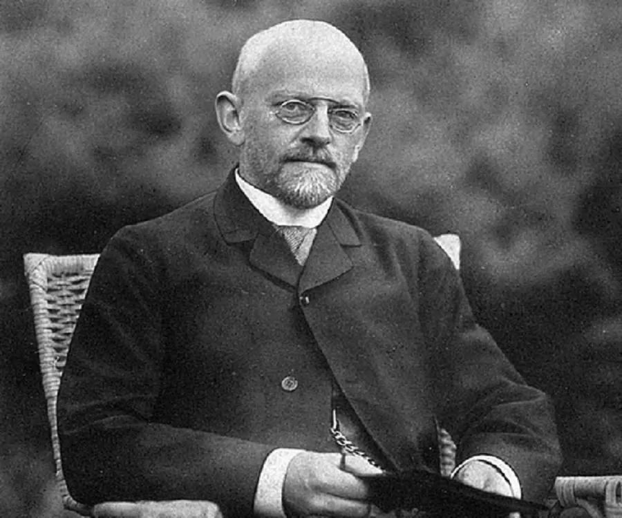Дэвид Гильберт был, пожалуй, самым известным математиком времени. Он сыграл важную роль в разработке фундаментальных теорий в области коммутативной алгебры, вариационного исчисления и математической физики.
Проблемы Гильберта (набор из двадцати трех математических задач, которые он опубликовал в 1900 году) повлияли на новаторские исследования в различных областях математики. Некоторые из этих проблем до сих пор не решены.
В последние дни Дэвид Гильберт посвятил себя физике. Именно в это время он соревновался с Альбертом Эйнштейном в общей теории относительности.
10. Анри Пуанкаре
Известен: проблема с тремя телами; Теория хаоса; Теорема Пуанкаре – Хопфа
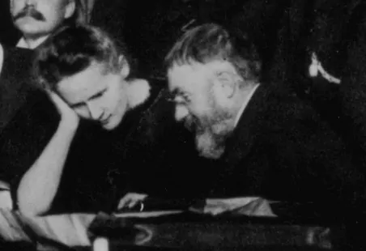По словам Эрика Белла, известного шотландского математика, Анри Пуанкаре был, вероятно, одним из последних универсалистов, поскольку в то время он процветал почти во всех известных областях математики.
В течение своей жизни Пуанкаре внес многочисленные теории в области математической физики, прикладной математики и астрономии. Он сыграл важную роль в разработке теории специальной теории относительности.
Более того, его исключительные работы по преобразованию Лоренца и проблеме трех тел проложили путь математикам, а также астрофизикам к открытиям о нашей планете и космосе. Его теоретические работы даже вдохновили известных художников, таких как Пикассо и Брак, создать художественное движение (кубизм) в 20-м веке.
11. Г.Ф. Бернхард Риман
Известен: интеграл Римана; Ряд Фурье
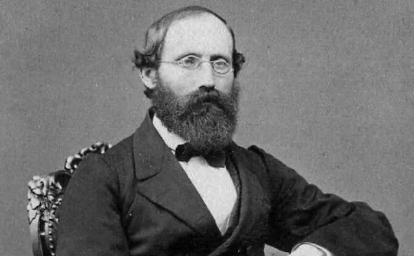Георг Бернхард Риман родился в небольшой деревне недалеко от Данненберга, Германия. Под руководством Карла Фридриха Гаусса Риман изучал дифференциальную геометрию и выдвигал свою теорию дополнительных или более высоких измерений. Его работа теперь известна как риманова геометрия.
На Римана оказал сильное влияние Иоганн Густав Дирихле, который также оказал влияние на его математическую карьеру. Только используя принцип Дирихле, он смог сформулировать знаменитую теорему Римана о отображении.
Некоторые из его математических уравнений были позже использованы Эйнштейном в его общей теории относительности.
12. Алан Тьюринг
Известен: Криптоанализ загадки, Доказательства Тьюринга, премия Смита (1936)
Во время Второй мировой войны немецкая разведывательная сеть считалась почти непробиваемой. Многие союзные страны боялись, что, если они не смогут перехватить важные передачи нацистского верховного командования, они могут в конечном итоге проиграть войну.
Это был Алан Тьюринг, который благодаря своим беспрецедентным математическим и криптоаналитическим способностям значительно улучшил бомбу польского производства и разработал машину, способную быстрее декодировать Enigma.
После окончания войны Тьюринг присоединился к Национальной физической лаборатории (Великобритания), где он разработал автоматический вычислительный движок, один из самых ранних компьютеров с хранимой программой.
Позже в своей карьере он отвлек свое внимание на теоретическую биологию. Именно в это время он предсказал (математически) реакцию Белоусова – Жаботинского , которая позднее наблюдалась в 1960-х годах.
Математика в жизни
«Зачем мне эта ваша математика? Где она мне в жизни пригодится?» Разбираемся
Ежедневно люди применяют математику и даже не догадываются, что с этой наукой связано много интересного. Когда-то в Англии жил ученый А. де Муавр. Его заинтересовал факт увеличения продолжительности сна. Ученый заметил, что его сон увеличивается на пятнадцать минут. Как математику, ему стало интересно, к чему это может привести. Ученый подсчитал, когда его сон будет занимать 24 часа. Эта дата выпала на 27 ноября 1754 г. – дату его смерти. В российских школах число ноль не считается натуральным, а вот в западных – оно относится к множеству натуральных чисел. Математики всегда пытаются выполнять с цифрами различные действия, даже играя в казино. Оказывается, если сложить все цифры рулетки, то сумма будет 666.
В быту. Математика — в виде элементарной арифметики — в повседневной жизни пригодится для расчёта:
- бюджета ежедневных покупок;
- количества ингредиентов в готовке и кулинарии;
- числа калорий при диете;
- интенсивности тренировок;
- времени и затрат на путешествия.
Начала геометрии (площади и объёмы простых фигур) потребуются, когда вы будете подсчитывать количество необходимых материалов для ремонта в доме. Более продвинутая математика (функции и сложные проценты) нужна, если вы оцениваете стоимость кредита, лизинга или решаете, куда вложить свободные средства.
В учёбе. Для написания контрольных, получения зачётов и сдачи экзаменов. В России математика преподаётся даже на самых гуманитарных направлениях в школах и вузах, где зачастую скромный объём программы с лихвой компенсируется атмосферой всеобщего трепета перед ней.
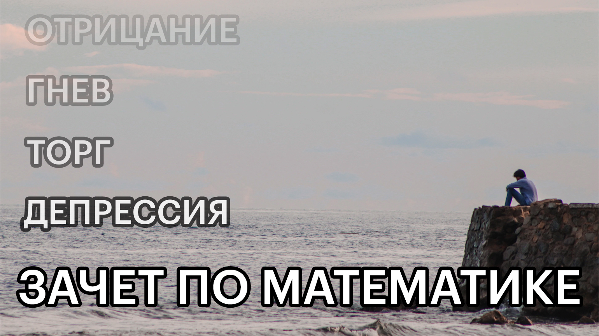Для карьеры. Даже если ваша работа не связана с математикой напрямую, она может содержаться под капотом в разных инструментах типа формул и макросов в Excel или скриптов для анимации в After Effects.
Второй способ применения математики в карьере — это решение задач на собеседованиях, курсах повышения квалификации, профессиональных конкурсах и сертификационных экзаменах.
Наконец, третий способ применения математики на работе — символический, когда важно не знание математики, а интерес к ней. Например, если гендир окончил мехмат МГУ, то руководителем департамента скорее станет тот, кто понимает (или старается понять) его шутки про матан и топологию.
Для хобби и саморазвития. Если вы играете в компьютерные игры, то, возможно, знаете, что расчёт характеристик вашего персонажа — это довольно суровая математика. Обычный игрок в неё, конечно, не вникает, а создатели игр часто чинят разные препятствия слишком уж продвинутым теорикрафтерам, не без оснований считая, что те портят атмосферу игры.
Тем, кто увлекается ставками на исходы спортивных событий, не повредит знакомство с теорией вероятностей и математической статистикой. Базовая статистика нужна и для тайм-менеджмента, основанного на учёте и анализе потраченного времени.
Для всего. Мыслить как математик — это значит уметь обобщать и моделировать. Это основы абстрактного мышления, а «использование правильных абстракций приводит к более глубокому проникновению в суть вопроса и большему могуществу при его решении» (С. Строгац, «Удовольствие от x»).
Абстрактное мышление является нашим эволюционным преимуществом — мы умеем с пользой для себя обращаться с тем, что невозможно учуять, увидеть или попробовать на зуб.
А если математика действительно является невидимой инфраструктурой физического мира, как считает Макс Тегмарк, то её изучение даст нам ни больше ни меньше ключи ко всей Вселенной. Мы вроде как хотим узнать, что такое эта самая Вселенная, поэтому «приводим в порядок ум» — и вперёд!
Интересные факты о математике
Ниже представлено краткое содержание, как появилась математика, какие с ней связаны интересные факты. Оказывается, что эта наука еще сложнее, чем кажется.
- Вся наука математики умещается в 100 000 книг.
- Первая женщина-математик – Гипатия, жившая в Древней Византии еще за 500 лет до нашей эры.
- Самое загадочное число, с которым связано не только множество математических открытий, но и религиозных писаний – 666.
- В парламенте Европы имеется кресло с номером 666, которое всегда пустое.
- По всему миру все объекты, которые попадают под номер 666, заменяются на другие цифры. Так, в мире не существует трасс с номером 666, маршруток, кодов телефонов.
- Самые первые найденные математические свидетельства были обнаружены в Свазиленде. На кости бабуинов выбиты черточки. Возраст данной находки более 40 000 лет.
- У каждого народа есть свое суеверное число. В России – это 13, а в Китае – 4, причем, у китайцев нет квартир с этим номером, в лифте нет четвертого этажа. В Италии не любят 17.
- Самые счастливые и популярные цифры по результатам опроса – это 7 и 3. Такие результаты не удивительны, ведь в древней религии с числом 7 связана положительная энергетика.
- Самое большое число в мире – это центилион. У него на конце 600 нулей.
- Самое малое число, известное ученым, даже не получило название. Это десятичная дробь, у которой после запятой перед единицей стоит сто миллионов триллионов триллионов нулей. Эта цифра не используется математиками, но применяется астрономами при расчетах вероятности формирования новой Вселенной из атома.
- Статистика является самостоятельной наукой, но она на 95% состоит из математических вычислений.
- В Древней Греции понятия “математика” и “геометрия” были тождественны. Алгебра была изобретена позднее.
- Западные учёные относят ноль к натуральным числам, а русские – нет.
- Математики Древнего Рима не использовали число 0.
- Знак равенства был изобретён лишь в XVI веке, и изначально он был в добрый десяток раз длиннее, чем сейчас.
- Есть лишь одна цифра, у которой два официальных названия вместо одного. Это ноль, он же нуль.
- Единственными простыми натуральными числами в математике, заканчивающимися на “2” и “5”, являются эти самые числа.
- На арабском языке, откуда к нам пришли современные цифры, слово “ноль” означает “цифра”.
- В западных культурах несчастливым считается число 13, а в азиатских – число 4..
- Число Пи, одна из основ математики, было открыто учёными разных культур независимо друг от друга. Оно, кстати, бесконечно.